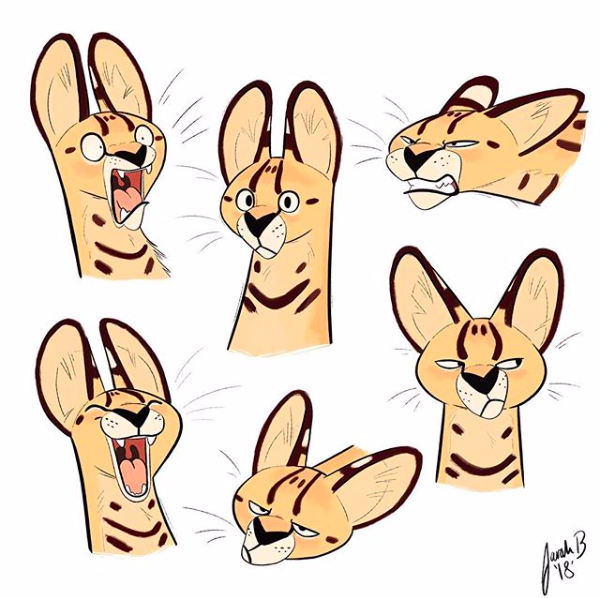

Design Hero - Sarah Brennan

As I have mentioned previously in some of my other Designerly Curiosity submissions, I am a huge fan of illustration and character design. My favorite pastime is to get out a sketchbook and pencil or in this day and age my iPad and Apple Pencil. I enjoy not only sketching and designing myself, but also looking at and researching the works of others. Some of my favorite designers are illustrators from Disney, including my other design hero for the Designerly Curiosity. I think that Disney concept art behind the animated movies are absolutely stunning. However, I do follow some contemporary artists on social media, including Sarah Brennan from Melbourne, Australia.
Sarah may not be a very well-known artist, but she does have 8,000 or more followers on Instagram. The reason that I chose her as my second design hero is because the characters that she illustrates have so much personality and she has so much potential as an artist moving forward. Each character that she creates has multiple poses and emotions in each Instagram post. These multiple poses are great for learning more about the character and their reactions. Each of her created characters have a simple white background to primarily put the focus on the characters themselves. In all, I could have chosen a lot of modern-day artists to write about and chosen another one of my favorite Instagram artists; however, there is something about Sarah Brennan’s characters that make her stand out and, as previously stated, have so much potential to be a professional character designer.